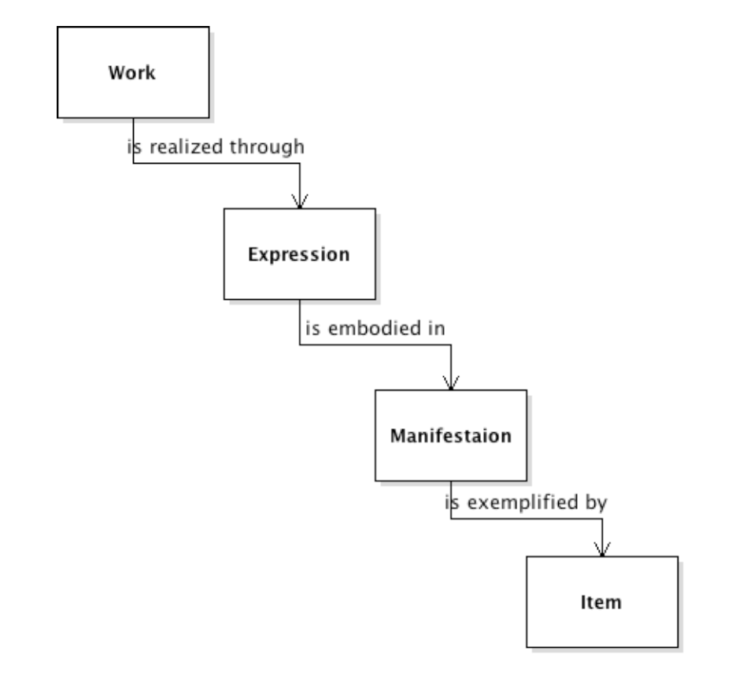
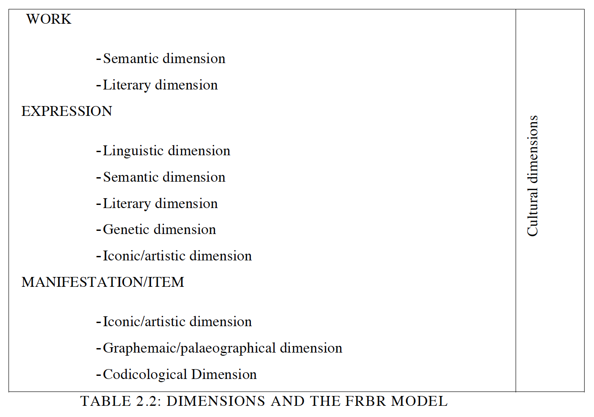

Rechercheergebnisse und Worflow zur Generierung einer Digitalen Edition am Orient Institut-Beirut
Während in der deutschen Literatur stets der Begriff digitale Editionen verwendet wird, benutzt die englische Literatur digitale (wissenschaftliche) Editionen, sowie elektronische Editionen synonym.
Nachfolgend werden Definitionsversuche von Patrick Sahle, einem Angehörigen des Center for eHumanities, Brendan Duffy, einem Digitisation Assistant an der Library National University of Ireland und John Young, ein Author des Committee on Scholarly Editions vorgestellt. Es schien interessant diese drei Positionen nebeneinander zu stellen, da sie aus unterschiedlichen Institutionen stammen und zum Teil gegensätzlich sind.
“Edition ist die erschließende Wiedergabe von historischen Dokumenten”3
Der Begriff Wiedergabe verweist hierbei auf zwei Dinge: Die Inhaltliche Abbildung und die Präsentation in einer Publikation. Man betrachtet diese zwei Aspekte oft als einen, in einer digitalen Welt trennt man sie jedoch in Inhalt und Form. Dabei werden die Inhalte durch spezifische Computersysteme organisiert, verwaltet und anschließend publiziert. Diese Wiedergabe ist nur eine mögliche Form von vielen, sie kann durch unterschiedliche Kriterien variieren (technische Umgebung, Vermarktungsabsichten usw.). Das Vorwort erschließende meint dabei die Strukturierung der Dokumente auf der einen und das Hinzufügen von editorischem Fachwissen auf der anderen Seite. Unter historische Dokumente werden nicht nur historische Schriften, sondern ebenfalls Siegel, Abbildungen, Gemälde etc. verstanden.4
Folgende Aspekte müsse eine Edition ermöglichen um als digitale Edition zu gelten:6
Aus dem Werk: Digital Scholarly Editing: Theories, Models and Methods S. 62-66 (2014).16
Das Bekannteste und einflussreichste Modell bibliografischer Katalogisierung wurde 1998 von Bibliotheken entworfen: Functional Requirement of Bibliographic Records - auch bekannt als FRBR.
Das Konzept stützt sich auf Entitäten und Beziehungen zwischen den einzelnen Werken und bringt diese dadurch in Verbindung.
Dabei wird zwischen zwei Entitäten-Gruppen unterschieden:
Entitäten für intellektuelle und künstliche Inhalte:
Entitäten für physikalische Inhalte:
Beispielhaftes Schema:

Multiple Dimensionen:

Nutzen des FRBR:
Grenzen des FRBR:
Aus dem Werk: Digital Scholarly Editing: Theories, Models and Methods S. 69-73 (2014).17
Sahle, Patrick: Vom editorischen Fachwissen zur digitalen Edition: Der Editionsprozeß zwischen Quellenbeschreibung und Benutzeroberfläche, in: Fundus - Forum für Geschichte und ihre Quellen, Heft 2 (2002): Quellen und Quelleneditionen im neuen Medienzeitalter, Hg. von Manfred Thaller, Göttingen 2002, S. 76ff, URL: http://webdoc.sub.gwdg.de/edoc/p/fundus/2/sahle.pdf [abgerufen am 11.10.2017]. ↩
Sahle, Patrick: a catalog of: Digital Scholarly Editions, v 3.0, snapshot 2008ff (2008), URL: http://www.digitale-edition.de/vlet-about.html [abgerufen am 11.10.2017]. ↩
Vgl. ebd. ↩
Vgl. ebd. ↩
Vgl. ebd. ↩
Vgl. Sahle, Vom editorischen Fachwissen zur digitalen Edition, S. 83. ↩
Duffy, Brendan: Digital Scholarly Editions, URL: http://library.nuigalway.ie/support/researchsupport/digitisationcentre/digitisingtosupportscholarship/digitalscholarlyeditions/ [abgerufen am 12.10.2017]. ↩
Young, John: Considering the Scholarly Edition in the Digital Age: A White Paper of the Modern Language Association’s Committee on Scholarly Editions, in: Committee on Scholarly Editions (2015), URL: https://scholarlyeditions.mla.hcommons.org/2015/09/02/cse-white-paper/ [abgerufen am 12.10.2017]. ↩
Young, Considering the Scholarly Edition. ↩
Prof. Dr. Malte Rehbein, Universität Passau, URL: http://www.phil.uni-passau.de/dh/lehrstuhlteam/prof-dr-malte-rehbein/ [abgerufen am 17.10.2017]. ↩
Rehbein, Malte: The transition from classical to digital thinking Reflections on Tim McLoughlin, James Barry and collaborative work, Jahrbuch für Computerphilologie 10 (2008), Rehbein über “The Transition from classical to digital thinking” (23. April 2009) S. 1f, URL: http://computerphilologie.tu-darmstadt.de/jg08/rehbein.pdf [abgerufen am 17.10.2017]. ↩
Elena Pierazzo, URL: http://peterstokes.org/elena/CV/output/Pierazzo-CV.html [abgerufen am 17.10.2017]. ↩
Pierazzo, Elena: Digital Scholarly Editing: Theories, Models and Methods (2014), S. 7, URL: http://hal.univ-grenoble-alpes.fr/hal-01182162. ↩
Kenneth M. Price, Center for Digital Research in the Humanities, URL: https://cdrh.unl.edu/about/faculty/price [abgerufen am 16.10.2017]. ↩
Price, Kenneth M.: Electronic Scholarly Editions, in: A Companion to Digital Literary Studies (2008), URL: http://digitalhumanities.org/companion/view?docId=blackwell/9781405148641/9781405148641.xml&chunk.id=ss1-6-5 [abgerufen am 12.10.2017]. ↩
Vgl. Pierazzo, Digital Scholarly Editing: Theories, Models and Methodes, S. 62-66. ↩
Vgl. ebd. S. 69-73. ↩